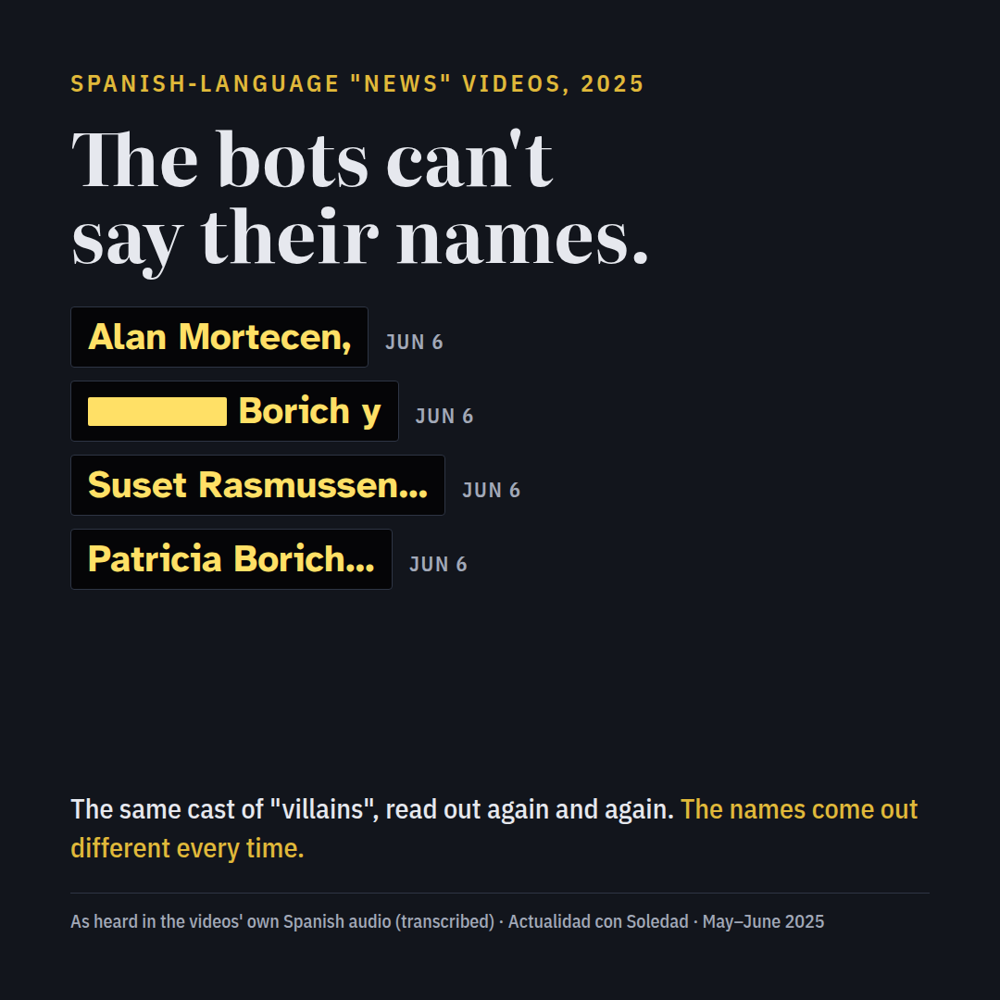
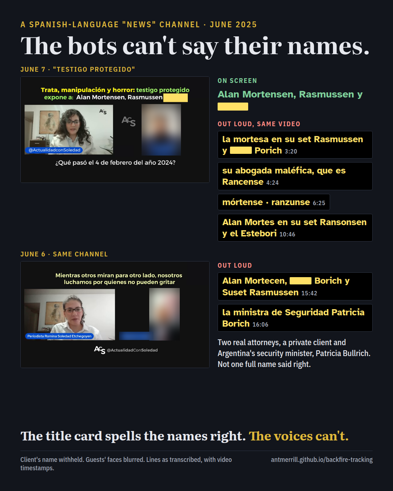
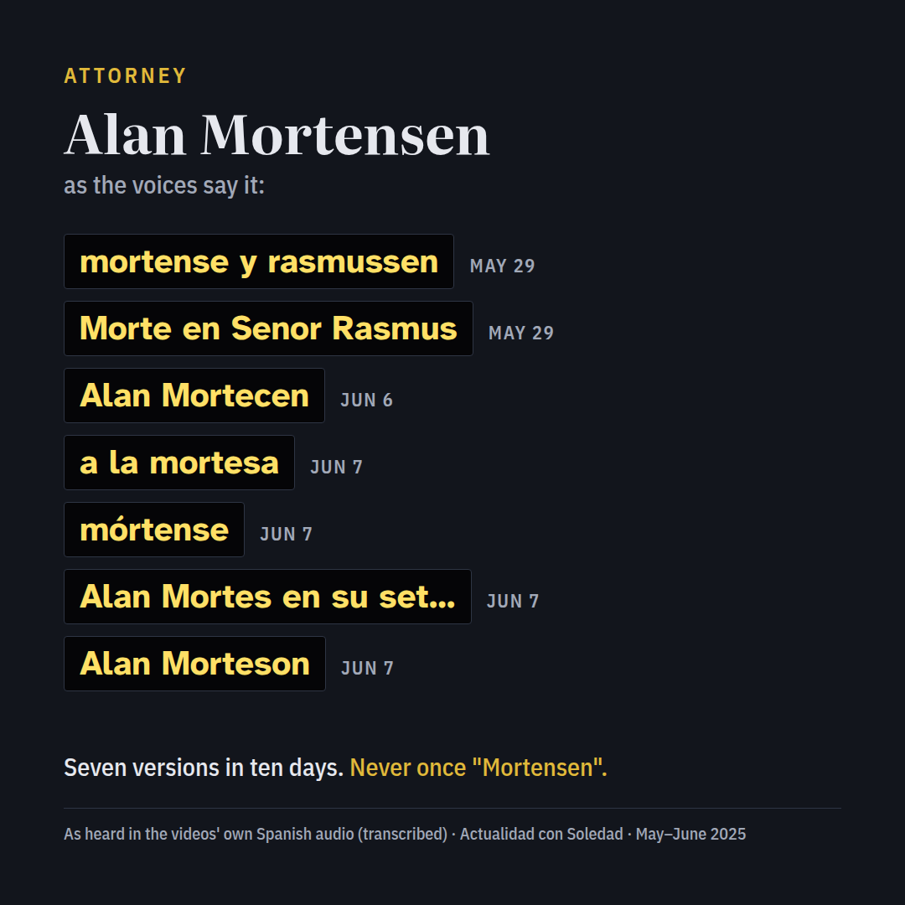
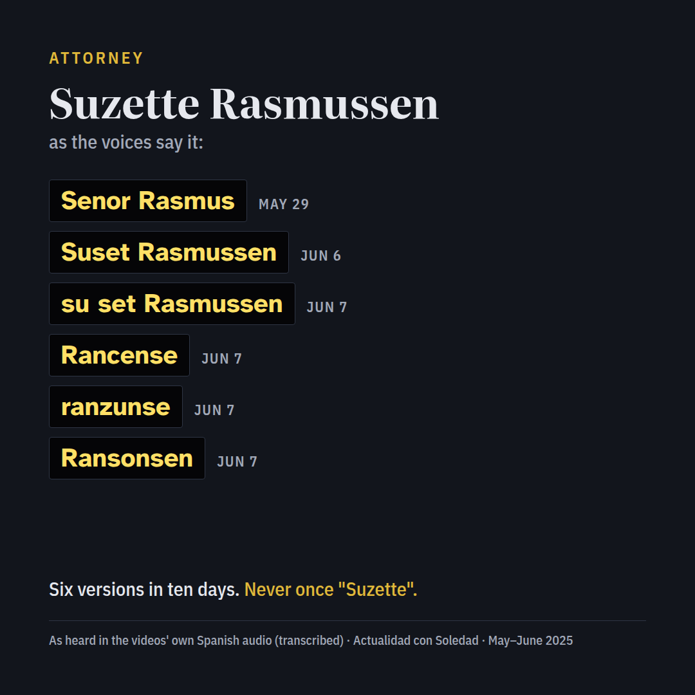
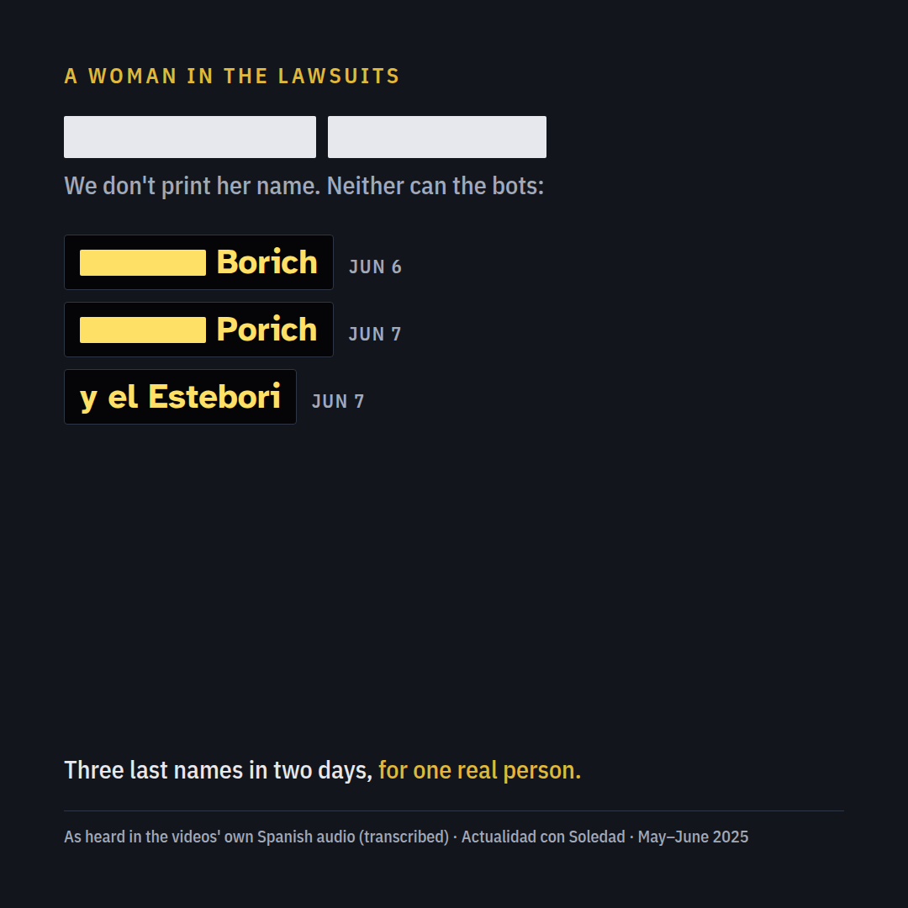
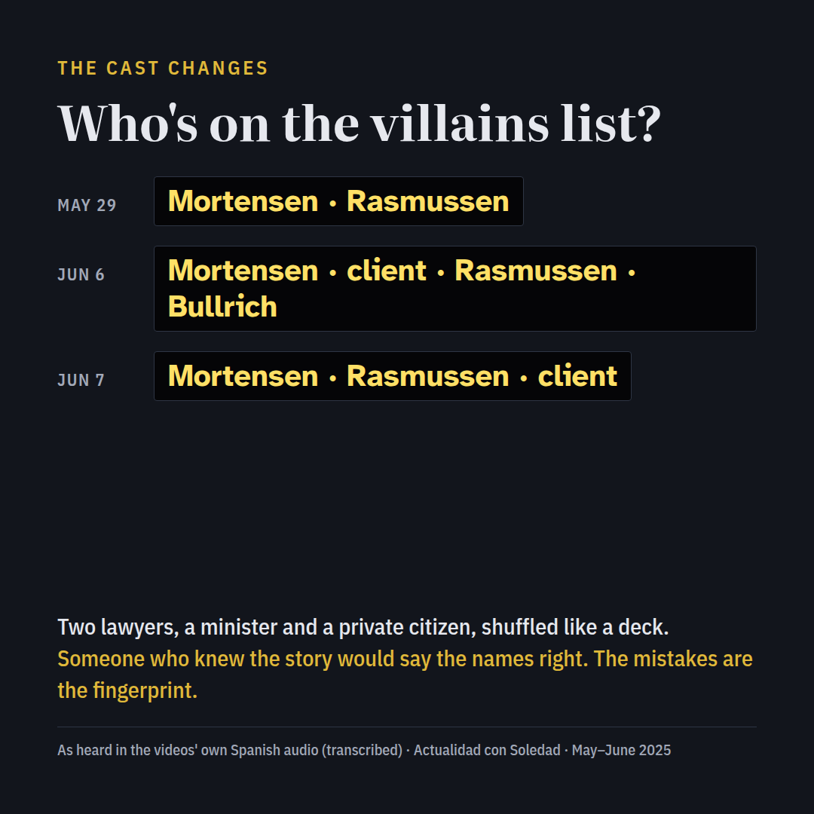

The bots can't say their names
A Spanish-language "news" channel spent the spring of 2025 reading out the same list of villains. The voices never once got the names right, and the list itself kept changing.

On screen, and out loud
The June 7 video's own title card spells the names correctly. The voices in the same video don't.

Someone who knows a story says the names in it correctly. Alan Mortensen and Suzette Rasmussen are real attorneys, and their names are on court filings and in the news. A channel that had actually followed the case would have no trouble with them. These videos get them wrong in a new way almost every time.
Alan Mortensen, attorney
Seven versions in ten days. Never once "Mortensen".

Suzette Rasmussen, attorney
Six versions in ten days. Never once "Suzette".

A woman in the lawsuits
She is a private person, so her name isn't printed here. The videos give her three different last names in two days.

Patricia Bullrich, Argentina's security minister
In the June 6 video, 24 seconds after the client's name, the minister comes out as "Patricia Borich". A cabinet minister and a private citizen end up with the same last name.
The cast changes
The list of names read out together isn't stable either: two names on May 29, four on June 6, three on June 7.

How to read this
Everyone mispronounces a name now and then. That isn't the point. These are short, scripted segments, and the same handful of names comes out differently from video to video, even a day apart, while the group they are recited in keeps changing. That's what it sounds like when a script is read by voices with no connection to the events.
The client's name and the name of the man these videos defend are deliberately left out.
How this was gathered
Each video's audio was transcribed, and every line naming one of these people was found and checked by its timestamp. The forms shown are the transcript's own spelling. The dates are the videos' upload dates. Clips and timestamps are kept for verification.
The story this circle has been passing around: The SRA Loop: a reader's guide.